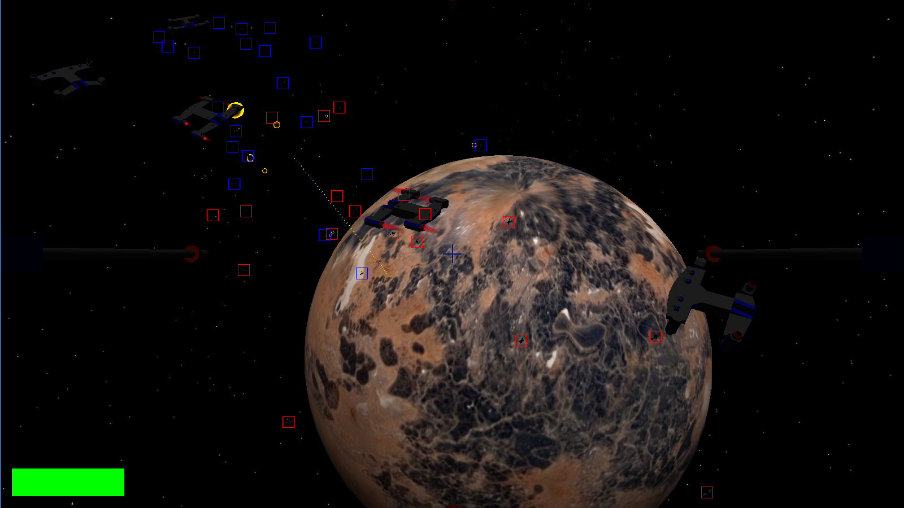

Aspect - A Java/OpenGL game engine
Language: Java, JavaScript (scripting)
Other Libraries: OpenGL, OpenAL, Nashorn
Aspect is a Java game engine that I made throughout my junior and senior years of high school. While working on this project, I taught OpenGL and various other topics necessary for engine programming. While this project began as a simple wrapper for common operations in OpenGL, I continued adding features, creating a much more featured game engine.
During my senior year, I used Aspect as a base for research into rigidbody physics for my senior computer science class. I was able to create a fully-functional rigidbody physics simulator with support for many bodies, physical forces, and constraints such as springs and ropes.
Other features I developed to varying degrees of completeness included:
- A level editor inspired by the Source engine Hammer editor (which I had used to make Portal 2 maps).
- A UI system with text and image components and layouts for organizing components.
- A JavaScript scripting system that could be used to add easily editable scripts to a game.
- Spatial object storage using an Octree.


In addition to rigidbody simulations and a fully-functional prototype of Supernova, I used Aspect to create several interesting demos. I spent a lot of time messing around with GLSL shaders and various uses of perlin noise, including terrain generation. I also had something of an obsession with lens flares...
This was a solo project, both as a personal project and when doing research for class. I did receive a ton of support, encouragement, and strategic help from my high school computer science teacher, Andrew Merrill.